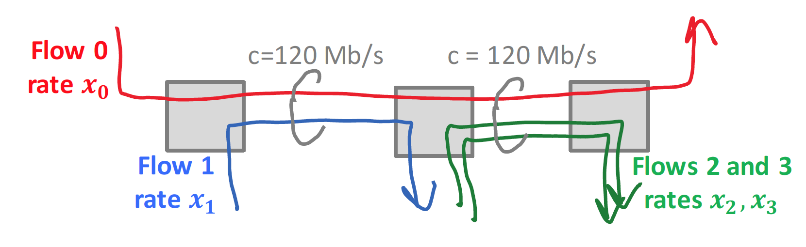

A. In order to send to a multicast group a system must first join the group with IGMP or MLD
B. In order to receive from a multicast group a system must first join the group with IGMP or MLD
C. A system can know whether a packet is multicast by analyzing the IP destination address.
[ ] A
[ ] B
[ ] C
[ ] A, B
[ ] A, C
[ ] B, C
[ ] A, B, C
[ ] None
The destination MAC address is…
[ ] group address derived from the last 23 bits of the IPv6 destination address
[ ] A group address derived from the last 24 bits of the IPv6 destination address
[ ] A group address derived from the last 32 bits of the IPv6 destination address
[ ] A broadcast address
[ ] The MAC address of an ARP server
Switches handle all multicast as ASM. What is the implication ?
[ ] an SSM receiver may receive unwanted traffic at the MAC layer
[ ] SSM traffic is not supported
[ ] A and B
[ ] None
What should router A do when it has several packets to send to destination D ?
[ ] send them to nextâ€hop F or C with equal probability
[ ] choose one nextâ€hop and send all packets to this nextâ€hop
[ ] test the availability of the nextâ€hop before sending
[ ] something else
When a router crashes, how do all routers in area detect the crash ?
[ ] The immediate neighbours detect loss of adjacency and flood new LSAs with the updated list of adjacent routers
[ ] By the hello protocol
[ ] By timeout of LSAs stored in their linkâ€state database
[ ] By absence of BFD (Bidirectional Forwarding Detection) messages
When applying the Bellman-Ford formula to compute \(d(self,n_1)\), how does a router such as A1 know the values of \(d(self,BR)\) and \(d(BR,n_1)\) ?
[ ] \(d(self,BR)\) from its routing table and \(d(BR,n_1)\) from its link state database
[ ] \(d(self,BR)\) from its routing table and \(d(BR,n_1)\) from its link state database
[ ] both from the routing table
[ ] both from the link state database
How many link state databases does router X3 have ?
q22
[ ] 1
[ ] 2
[ ] 3
[ ] 0
Do we need OSPF (or another routing protocol) if we have SDN ?
[ ] No because flow tables can replace IP forwarding tables
[ ] Yes because flow tables cannot replace IP forwarding tables
[ ] Yes because the central controller needs a way to communicate with local controllers
[ ] I don’t know
Source routing means that …
[ ] all routers have a detailed map of the entire network
[ ] routers send their best paths to destination to their neighbors
[ ] the path of a packet is written in the packet header by the source
[ ] the path of a packet depends not only on the destination address but also of the source address
Say which is true: In a fully connected network…
Bellman-Ford, Centralized converges to the correct distances regardless of initial conditions
Bellman-Ford, Distributed converges to the correct distances regardless of initial conditions
[ ] 1
[ ] 2
[ ] 1 + 2
[ ] None
With Bellman-Ford Distributed, count to infinity…
[ ] May occur due to wrong initial conditions even when the network is fully connected
[ ] May occur when some messages are mis-ordered even when the network is fully connected
[ ] Occurs whenever the network is not fully connected
[ ] May occur only when some link costs are ≥ 16
With distance vector, “route poisoning†means …
[ ] A router sends bad routes to a neighbor 𝑗 when it detects that 𝑗 sends misconfigured hello messages
[ ] When a router 𝑖 detects that a route to destination 𝑛 becomes invalid, the next update sent to 𝑖’s neighbors contains : “distance to 𝑛 = ∞”
[ ] When a router 𝑖 detects that a route to destination 𝑛 becomes invalid, 𝑖 removes 𝑛 from the next update sent to 𝑖’s neighbors
We use distance vector routing. Router 𝑗 is 𝑖’s next hop to destination 𝒏 and the cost to 𝒏 at 𝑖 is 5. All link costs are equal to 1. Then router 𝑖 receives from router 𝑗 the update “cost to 𝑛 = 10â€. What is the cost to 𝑛 at router 𝑖 after processing this received update ?
q23
[ ] 5
[ ] 6
[ ] 10
[ ] 11
One allocation (in Mb/s) is max-min fair; which one?
q24
[ ] 𝑥2 = 40, 𝑥6 = 40, 𝑥7 = 𝑥8 = 40
[ ] 𝑥2 = 60, 𝑥6 = 60, 𝑥7 = 𝑥8 = 30
[ ] 𝑥2 = 40, 𝑥6 = 60, 𝑥7 = 𝑥8 = 40
[ ] 𝑥2 = 40, 𝑥6 = 80, 𝑥7 = 𝑥8 = 40
One allocation (in Mb/s) is proportionally fair; which one?
[ ] 𝑥2 = 40, 𝑥6 = 40, 𝑥7 = 𝑥8 = 40
[ ] 𝑥2 = 30, 𝑥6 = 90, 𝑥7 = 𝑥8 = 45
[ ] 𝑥2 = 50, 𝑥6 = 70, 𝑥7 = 𝑥8 = 35
[ ] 𝑥2 = 55.2, 𝑥6 = 64.8, 𝑥7 = 𝑥8 = 32.4
In a network where the set of feasible rates is convex and bounded…
[ ] There is at most one proportionally fair allocation
[ ] There is exactly one proportionally fair allocation
[ ] There is at least one proportionally fair allocation
Say which statements are true (in a network where the set of feasible rates is convex and bounded):
Any rate allocation that maximizes the sum of the logarithms of the rates (subject to feasibility) is proportionally fair
Any rate allocation that maximizes the minimum of the rates (subject to feasibility) is max-min fair
[ ] 1
[ ] 2
[ ] 1 + 2
[ ] None
In a network, 𝒏 sources stream data at a constant rate 𝒄 to a single sink, using UDP and without any congestion control. The network links are at 2 Mb/s for some links, 10 Mb/s for others. The sink receives data at a rate limited only by its network access speed , equal to 2 Mb/s. When 𝒏 is large, there are many losses. The rate at which the sink receives information…
[ ] can be much smaller than 2 Mb/s
[ ] must be close to 2 Mb/s
[ ] can be much larger than 2 Mb/s
A and B use TCP. At time ğ’•ğŸ, the protocol is initialized. At A, the max number of duplicates, TCPMaxDupACKs is equal to 2. At time ğ’•ğŸ A detects the loss – by which means ?
q25
[ ] Either by timeout or by fast retransmit
[ ] By timeout and not by fast retransmit
[ ] By fast retransmit and not by timeout
[ ] By Nagle’s algorithm
In the Internet, the layers other than the application layer that perform retransmission following a loss are…
[ ] The transport layer (TCP) only
[ ] The transport layer (TCP) and in some cases the IPv4 or IPv6 network layer
[ ] The transport layer (TCP) and in some cases the IPv6 network layer but not IPv4
[ ] The transport layer (TCP) and in some cases the MAC layer
The value of the retransmission timeout used by TCP …
[ ] Is fixed and is equal to the round trip time
[ ] Is dynamic and uses an estimation algorithm implemented in TCP
[ ] Is dynamic and uses an estimation algorithm provided by ping
[ ] Is dynamic and uses an estimation algorithm provided by DNS servers
With IP multicast, a host that sends a packet to a multicast address 𝒎…
[ ] …needs to inform its default router with IGMP or MDP that it intends to send to 𝑚, so that the router can build a multicast tree
[ ] …does not need to inform its default router and can simply send to the address 𝑚
[ ] …does not need to inform its default router but needs to inform its switch using the spanning tree protocol
[ ] …does not need to inform its default router but needs to inform its DHCP server
A. With wireshark we can recognize that a packet is multicast by analyzing its destination MAC address
B. With wireshark we can recognize that a packet is multicast by analyzing its destination IP address
[ ] A and not B
[ ] B and not A
[ ] A and B
[ ] Neither A nor B
Link state routing means
[ ] all routers have a detailed map of the entire network
[ ] the path of a packet is written in the packet header by the source
[ ] the path of a packet depends not only on the destination address but also on the state of links
[ ] the path of a packet depends not only on the destination address but also on the source address
With Bellman-Ford Distributed, count to infinity …
[ ] may occur when initial conditions are arbitrary and when the destination is unreachable
[ ] may occur when initial conditions are arbitrary even if the destination is reachable
[ ] may occur only if link costs are not identical in both directions of the link
[ ] can never occur
Distance vector routing (=Bellman-Ford, Distributed) is used. All link costs are equal to 1. The state of router 𑨠is shown. Then router ğ´ receives from router ğµ the update “cost to 𝑛 = 5â€. What is the cost to 𝑛 at router ğ´ after processing this update ?
q26
[ ] 5
[ ] 6
[ ] 10
[ ] 11
Distance vector routing (=Bellman-Ford, Distributed) is used. All link costs are equal to 1. The state of router 𑨠is shown. Then router ğ´ receives from router ğµ the update “cost to 𝑛 = 10â€. What is the cost to 𝑛 at router ğ´ after processing this update ?
q27
[ ] 5
[ ] 6
[ ] 10
[ ] 11
In a fully connected network, Bellman-Ford- Centralized computes the correct distances to a destination…
[ ] if the initial conditions are ∠except at the destination node where it is 0
[ ] if the initial conditions are ∠at all nodes including the destination
[ ] if the initial conditions are larger than the true distances to destination
[ ] regardless of initial conditions
Router R (see fig.) has a flow table and a routing table as shown below. R receives a packet on eth0, with destination address 128.178.151.1. On which interface does R transmit the packet ?
q28
[ ] eth0
[ ] eth1
[ ] eth2
[ ] eth3
The routers A, B and C use distance vector routing i.e. distributed Bellman-Ford. The cost of the links A ! B and A ! C are 1. The routing table at A contains the entry “destination = n, cost = 4, next hop = Bâ€. A receives from B the routing update “Cost to n is 5â€. What is the cost to n at A after processing this routing update ?
[ ] 4
[ ] 5
[ ] 6
[ ] 3
In a fully connected network, which of the following algorithms always converge to the correct distance regardless of initial conditions ?
[ ] both centralized and distributed Bellman-Ford.
[ ] distributed Bellman-Ford but not centralized Bellman-Ford.
[ ] centralized Bellman-Ford but not distributed Bellman-Ford.
[ ] neither centralized nor distributed Bellman-Ford.
Bart claims that he can recognize whether an IP packet is multicast simply by looking at the IP destination address. Is he right ?
[ ] No.
[ ] No with IPv4 but yes with IPv6.
[ ] Yes.
[ ] Yes with IPv4 but no with IPv6.
The routers A, B and C use distance vector routing i.e. distributed Bellman-Ford. The cost of the links A ! B and A ! C are 1. The routing table at A contains the entry “destination = n, cost = 4, next hop = Bâ€. A receives from C the routing update “Cost to n is 2â€. What is the cost to n at A after processing this routing update ?
[ ] 4
[ ] 5
[ ] 6
[ ] 3
Route poisoning means that…
[ ] a source that detects that destination n is unreachable sends a source-routed packet to destination n in order to inform all routers along the route that n is unreachable.
[ ] a router that detects that destination n is unreachable immediately sends the update “Cost to n is infinite†to all neighbours.
[ ] a router that receives a malformed routing sends it back to its originator.
[ ] a router A that has B as next-hop to destination n does not send to B updates about destination n.
In order to send packets via IP multicast to a group that corresponds to multicast address m, a host A should …
[ ] simply send IP packets with destination IP address equal to m.
[ ] first send an IGMP/MLD message to A’s gateway, and only then send IP packets to IP address m.
[ ] first broadcast an IGMP/MLD message inside A’s LAN, and only then send IP packets to IP address m.
[ ] send an IGMP/MLD message to all destinations of the multicast group.
Count to infinity may occur …
[ ] in a non fully connected network, with centralized Bellman-Ford but not with distributed Bellman-Ford.
[ ] in a non fully connected network, with distributed Bellman-Ford but not with centralized Bellman-Ford.
[ ] in a non fully connected network, both with centralized and distributed Bellman-Ford.
[ ] with distributed Bellman-Ford, regardless of whether the network is fully connected or not.
With link state routing …
[ ] all routers have a map of the network and its links.
[ ] all routers keep a record of which among their neighbouring links is the best to- wards the destination.
[ ] all routers keep a record of the distances to destination as seen by all their neighbours.
[ ] the computed distance to a destination depends on the state of network links.
Source routing means that …
[ ] the path is written in the packet header at the source.
[ ] the selection of a source for multicast IP is based on reverse path routing.
[ ] the routing protocol involves not only routers but also hosts (which are packet sources).
[ ] the routing decision at intermediate systems depends not only on the destination but also on the source of the packet.
Which statements are true ?
In slow start, the increase is additive.
Slow start is used to accelerate the convergence of Additive Increase, MultiplicativeDecrease
[ ] 1 and not 2.
[ ] 2 and not 1.
[ ] Neither 1 nor 2
[ ] 1 and 2.
We have a network with \(n\) sources and \(n\) destinations. Each link has a finite capacity. Each source sends at the same rate \(\lambda\). We plot the total throughput as a function \(f(\lambda)\) when \(\lambda\) increases to \(\infty\).
[ ] \(f(\lambda)\) is always monotonically increasing and \(lim_{\lambda \rightarrow \infty} f(\lambda) = \infty\).
[ ] \(f(\lambda)\) may be non-monotonic in some networks.
[ ] \(f(\lambda)\) is always monotonically increasing and \(lim_{\lambda \rightarrow \infty} f(\lambda)\) may be finite or infinite, depending on the network.
[ ] \(f(\lambda)\) is always monotonically increasing but \(lim_{\lambda \rightarrow \infty} f(\lambda)\) is finite, equal to the network capacity.
The capacities of the 2 links (shown as lines between boxes) is 12 Mb/s each. There are no other constraints than the 2 link capacities. The rates \(x_i\) of the flows (shown as arrows) are allocated according to proportional fairness. What is the proportionally fair allocation in Mb/s ?
q29
[ ] x1 = 4, x2 = x3 = 8.
[ ] x1 = x2 = x3 = 4.
[ ] x1 = x2 = x3 = 6.
[ ] x1 = 8, x2 = x3 = 4.
A router R1 uses distance vector and has two adjacent routers R2 and R3. All link costs are equal to 1. The routing information base at R1 contains the record shown in the table on the right. R1 receives from R2 the routing update: dest=9.9.9/24, distance=6. After R1 has processed this update, what is its distance to 9.9.9/24 ?
q30
[ ] 8
[ ] 7
[ ] 5
[ ] 6
The capacities of the 3 links (shown as lines between boxes) is 12 Mb/s each. There are no other constraints than the 3 link ca- pacities. The rates of the flows (shown as arrows) are allocated according to max-min fairness. What is the rate allocated to flow 1 ?
q31
[ ] 6 Mb/s.
[ ] 3 Mb/s.
[ ] 8 Mb/s.
[ ] 4 Mb/s.
Which statements are true ?
Additive Increase, Multiplicative Decrease tends to provide a fair and efficient allocation
Multiplicative Increase, Additive Decrease tends to provide a fair and effcient allocation
[ ] 1 and 2.
[ ] 2 and not 1.
[ ] 1 and not 2.
[ ] Neither 1 nor 2
In which case does every router keep a detailed description of the entire network ?
[ ] with link state and not with distance vector.
[ ] both with distance vector and with link state.
[ ] neither with distance vector nor with link state.
[ ] with distance vector and not with link state.
Which statements are true, for networks where rate allocation constraintscan be modelled by linear inequalities ?
There exists one and only one max-min fair allocation
There exists one and only one proportionally fair allocation
[ ] 1 and not 2.
[ ] 1 and 2.
[ ] 2 and not 1.
[ ] Neither 1 nor 2
With route poisoning, when a router detects that the route to a destination n becomes unreachable…
[ ] It immediately sends to all neighbours the message “distance to n = 1â€.
[ ] It keeps n in its routing table with dis- tance to n equal to the value that was valid before detecting unreachability and immediately sends to all neighbours its vector of distances to all destinations (including n).
[ ] It removes n from its routing table and immediately sends to all neighbours its vector of distances to all destinations other than n.
[ ] It removes n from its routing table and remains silent for a duration equal to the holddown timer.
In a connected graph with n nodes, we use centralized Bellman Ford to compute the distances from all nodes to node 1.
[ ] The algorithm converges to the correct values regardless of initial conditions.
[ ] If the initial conditions are the true distances to node 1, the algorithm con- verges to the correct values; otherwise it may happen that it does not con- verge and counts to infinity.
[ ] If the initial conditions are less than the true distances to node 1, the algorithm converges to the correct values;
[ ] otherwise it still converges but in some cases not to the correct values. If the initial conditions are the true distances to node 1, the algorithm converges to the correct values; otherwise it still converges but in some cases not to the correct values.